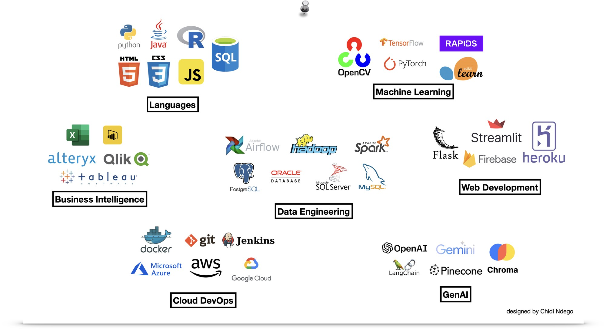

Largest inflated delivery ratio corrected at The Weather Company.
Hi. I'm
Chidi Ndego
BI Engineer
I leverage advanced analytics, machine learning, and AI to develop data-driven solutions that propel business growth.
Monthly infrastructure cost cut after the BlueOcean migration.
Accuracy of the GE outage-entitlement model on AWS Lambda.
RLHF effectiveness gain from fewer computer-vision errors.
Experience
-
BI Engineer
Jun. 2024 - Present
The Weather Company, USA (Remote)
- Resolved campaign overdelivery and viewability reporting defects, including delivery ratios inflated up to 23,968× and 41–46% metric variance, and removed false positives used by Finance and Ad-Ops.
- Re-architected a finance deferred-revenue dbt model from a full-table rebuild to incremental, month-partitioned processing, and reproduced audited figures across a 6-month backfill.
- Migrated critical pipelines onto the BlueOcean platform, improving query performance and stability while cutting infrastructure costs by ~$20K/month.
-
AI Engineer (Contractor)
Feb. 2023 - Mar. 2025
Turing (OpenAI / X.Ai / Google), USA (Remote)
- Created training data so ChatGPT, Grok AI, and Google LLM could use public APIs.
- Integrated computer vision and data analytics into the Code Interpreter.
- Improved RLHF effectiveness by 70% by reducing errors in computer vision tasks.
-
Lead Data Engineer
May 2024 - Dec. 2024
Ecosite, UK (Remote)
- Used DynamoDB, API Gateway, and Lambda to process solar-installation and company data for UK commercial buildings.
- Linked Google Maps, Companies House, and DNO data for solar-panel feasibility analysis.
- Automated migration between development, staging, and production.
-
Python Developer
Jul. 2022 - Feb. 2023
GE Vernova, Sub-Saharan Africa
- Standardised dashboard development, cutting completion time by 33%, and led Tableau data-literacy training.
- Estimated GE’s outage-service entitlement for gas turbines and generators at 96% accuracy on AWS Lambda.
- Automated financial data migration from Oracle ERP to SAP ERP.
-
Data Scientist
Sep. 2020 - Jul. 2022
Standard Bank Group, Nigeria
- Analyzed over 30 million data points and built clustering models that increased transaction volume by 32%.
- Stanbic IBTC’s SME and Retail customer-experience rating reached 78.6 in KPMG’s 2021 Nigeria Banking Industry Customer Experience Survey, up 8 places to first in that category.
- Automated account-opening documentation with Azure OCR, saving about 80% of filing time.
-
Junior Machine Learning Engineer (Volunteer)
Mar. 2020 - Aug. 2020
Omdena, USA (Remote)
- With 40+ data scientists, built random-forest and auto-encoder models with accuracies over 80%.
- Led a fifteen-person visualization team that built a web app with REST APIs and Python Dash for real-time alerts to caretakers and doctors.
Education and certifications
- B.Eng Petroleum Engineering, University of Benin, Nigeria (First Class Honors)
- Microsoft Certified: Data Analyst Associate (2022)
- Microsoft Certified: Azure Data Scientist Associate (2021)
- Intel® Edge AI Developer Certificate (2021)
Skills
- Python
- SQL
- dbt
- Claude Code
- Airflow
- Glue
- Athena
- Salesforce
- Redshift
- DynamoDB
- Docker
- Microsoft PowerBI
- Tableau
- Preset
- Microsoft Azure
- APIs
- Git
- Data Quality
- Financial Reporting
- Agentic Dev Tooling
- Agile Methodologies
- Stakeholder Management
- Database Design/Modelling
- Automation
- Documentation
- Critical Thinking
- Problem Solving
- Presentation
- Communication

Projects
Explore a curated selection of my most recent projects in artificial intelligence, computer vision, machine learning, and data analytics.

Document QnA App
A memory-infused question-answering system utilizing OpenAI's Large Language Models to intelligently process documents in formats like PDF, DOCX, and TXT. It features an interactive Streamlit interface for user interaction, advanced document handling capabilities, and efficient, context-aware response generation through OpenAI Embeddings. Deployed with Docker and Heroku, it ensures consistent performance and scalability.
OpenAI's GPT 3.5 Model, OpenAI Embedding Model, Chroma, Docker, Heroku, StreamlitLive demo coming back soon. The hosted app is offline, so the source and documentation are on GitHub.

Reddit Comments Classifier
Fine-tuned a BERT model to classify Reddit comments into three categories for a medical use-case, and deployed it using Streamlit.
Python, PyTorch, Transformer, NLP
Database Modeling in PostgreSQL
Designed and implemented data models in PostgreSQL to simplify complex schemas and improve query efficiency.
PostgreSQL, Python
Food Delivery Analytics
Analyzed trends in a food delivery business to optimize data-driven decisions through detailed analytics and visualization.
SQL, Microsoft PowerBI
Data Acquisition from an MQTT Broker
Implemented an efficient MQTT broker connection to stream process variables from remote IoT devices on oil and gas vessels.
Python, AWS Lambda, JSON, Paho-MQTT
Loan Default Prediction
Developed a cloud-based solution to predict loan defaults, comparing models built with AutoML and custom hyperparameter tuning.
Python, Azure AutoML, Azure SQL Database
People Counter App
Developed a smart video IoT solution that counts people in a video frame, enhancing surveillance and monitoring applications.
Python, Intel® OpenVINO™ Toolkit, OpenCV, Node.js, npm, FFmpeg, MQTT